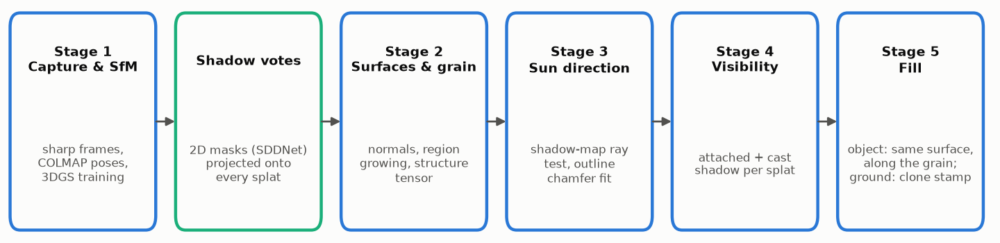
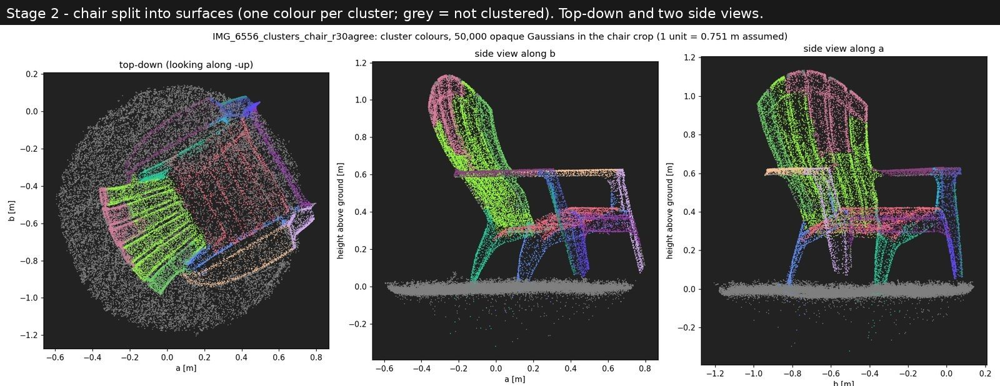
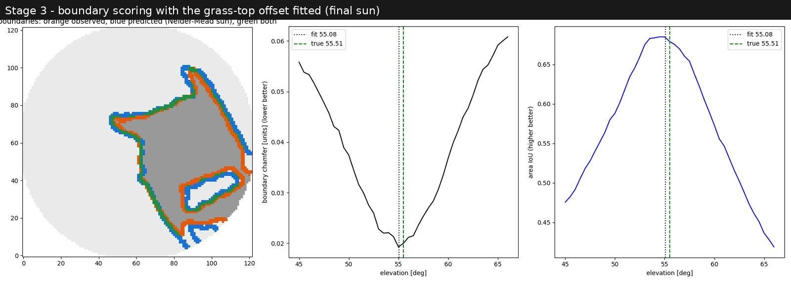
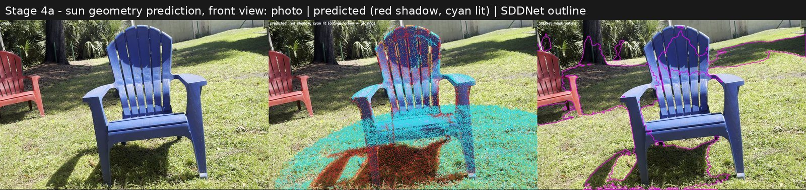
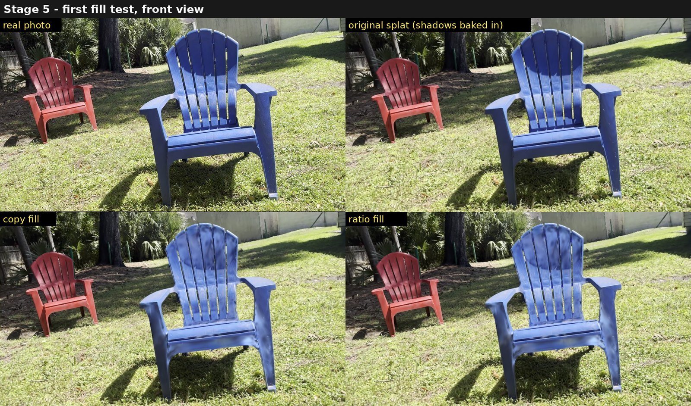
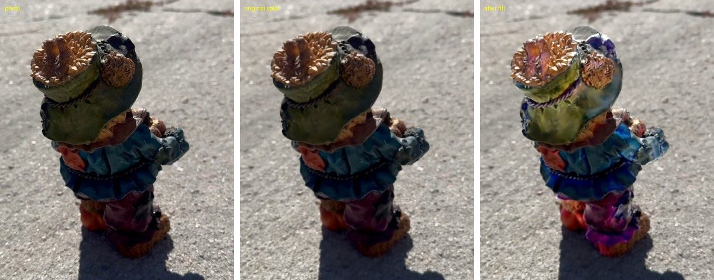
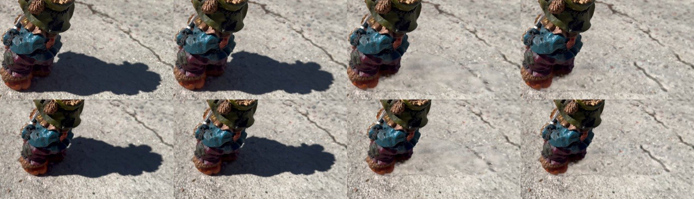
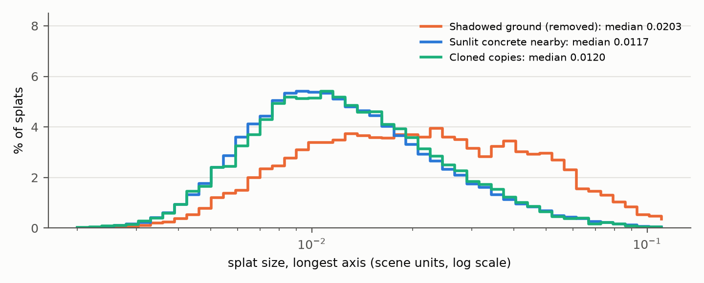
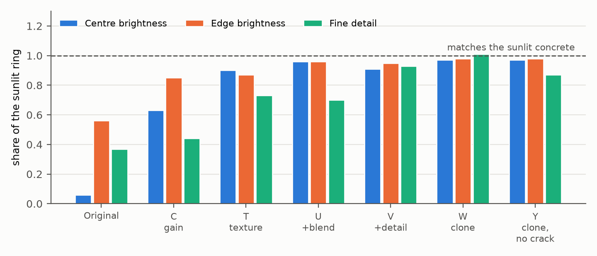

Shadow-Free Gaussian Splatting
Sun estimation from cast-shadow geometry and surface-aware inpainting of 3D Gaussian splats. My first research paper, and part of the work behind my MFA thesis, From Capture to Cut.
In short
A Gaussian splat trained outdoors under one sun stores that moment's shadows in the colours of its Gaussians, so the shadows travel with the model wherever it's moved or relit. Instead of decomposing the scene into materials and lighting, this paper treats shadow removal as careful retouching in 3D: work out which Gaussians are in shadow and why, then repaint them from sunlit Gaussians of the same surface, following the direction of its texture. The rule is "same surface and lit, not simply the brightest thing nearby." It needs no retraining and works on a finished splat from a single phone video.
Why shadows get baked in
Training only tries to match the input photos. Under one sun, a point inside a cast shadow is always seen dark, so its Gaussians are fitted dark; there is never an observation of that point in sunlight. The usual answer is inverse rendering, splitting each Gaussian into albedo, normal and lighting. I tried two such methods early on (GS-IR and GaussianShader), and with a single hard sun and one capture the cast shadows stayed in the recovered albedo. This paper makes the missing observation explicit instead: borrow it from a sunlit part of the same surface, in the spirit of exemplar-based image inpainting, but in 3D and guided by geometry.
The method

- 1 · Capture
Phone video, the sharpest frame in each of 650 windows, COLMAP camera poses, and a splatfacto-big splat kept in COLMAP's coordinates.
- Shadow votes
A published shadow detector (SDDNet) marks shadow in every frame; each Gaussian's shadow fraction is the share of its visible views that fall inside the mask.
- 2 · Surfaces and grain
Gaussians are grouped into surfaces from their shape alone, and each surface's texture direction (grain) comes from a structure tensor of the Gaussians' long axes. Colour is never used, so a shadow edge never splits a surface.
- 3 · Sun direction
An orthographic shadow map predicts the object's cast shadow for each candidate sun, scored by boundary chamfer distance against the observed shadow outline, with the height of the receiving surface fitted at the same time.
- 4 · Visibility
Every Gaussian is labelled sunlit, attached shadow (facing away) or cast shadow (blocked), and checked against a brightness-and-colour rule and a shadow detector fine-tuned on automatically generated 3D labels.
- 5 · Fill
On the object, shadowed Gaussians are repainted from sunlit ones of the same surface, searched along the grain. On the ground, a clone stamp copies sunlit Gaussians, both colour and geometry, into the shadow.
Experiment 1: a plastic chair on grass
A single navy plastic chair, captured on an iPhone 15 Pro Max in Savannah: 650 frames, a splat of 2.89 million Gaussians. One material makes brightness a direct measure of light, and the capture's GPS position and time give the true sun elevation, 55.51°.

The sun estimate was built up one change at a time. Letting everything cast shadow made grass blades throw false shadows across the lawn; restricting casters to the chair's surfaces, scoring the shadow's outline instead of its area, and fitting the height of the grass tops brought it to 55.08° against the true 55.51°.
| Version | Change | Elevation | Error |
|---|---|---|---|
| 1 | Everything above the ground casts shadow (area score) | 57.0° | +1.5° |
| 2 | Only the chair's surfaces cast shadow | 55.0° | −0.5° (unstable) |
| 3 | Also the chair's shadow on itself | 55.5° | ≈ 0 (± 2.5°) |
| 4 | Boundary chamfer instead of area | 56.3° | +0.8° (stable) |
| 5 | Also fit the receiver offset | 55.08° | −0.43° |


On the chair, brightness read from about 128 photos per Gaussian falls into two clear groups, sunlit about 13 times brighter than shade. Fine-tuning the off-the-shelf detector on automatic labels for about 2.5 minutes more than doubled its agreement with the geometry on held-out frames (IoU 0.21 → 0.48). The fill repainted 11,287 of the chair's 24,445 Gaussians and lifted shadowed plastic to 87% of sunlit brightness.

Experiment 2: a painted bear on concrete
A 15–20 cm painted resin figurine on a concrete driveway, captured for these tests (782,433 Gaussians, true sun elevation 44.27°). It's deliberately harder: many colours, curved sculpted surfaces, and a very dark shadow at 5–7% of the sunlit concrete.
Here the object-side stages break, and the paper reports why. Few Gaussians are flat enough to give a normal, so surfaces and grain are weak; with the legs missing from the casters, the sun comes out 4.98° too high. Brightness on a painted object is mostly paint, so the single-material shadow model fails, and the fill pushes shaded colours toward their sunlit neighbours across paints.

Removing the ground shadow
The concrete shadow is where the method works best. A per-Gaussian brightness gain lifts the shadow but leaves a flat patch: it can only multiply colour that was there, and texture never recorded in sunlight can't come back. A colour clone stamp copies sunlit concrete in with one shift so the pattern stays intact, but still leaves a soft smudge. The reason turned out to be geometry: Gaussians trained on the dark shadow are 1.7 times larger and more opaque than those on sunlit concrete, so no colour gives them the concrete's grain. The geometry clone stamp therefore replaces the shadowed Gaussians with translated copies of sunlit ones, sizes and all, choosing sources that avoid copying cracks.



| Variant | What it changes | Centre | Edge | Detail |
|---|---|---|---|---|
| Original splat | — | 0.06 | 0.56 | 0.37 |
| C | Per-channel gain | 0.63 | 0.85 | 0.44 |
| T | Colour clone stamp, one shift | 0.90 | 0.87 | 0.73 |
| U | T + outline blend + brightness match | 0.96 | 0.96 | 0.70 |
| V | U + detail ×1.4 | 0.91 | 0.95 | 0.93 |
| W | Geometry clone stamp, one shift | 0.97 | 0.98 | 1.01 |
| Y | W + crack-aware sources, up to 6 shifts | 0.97 | 0.98 | 0.87 |
Median of five rendered views. W copies a piece of the real crack into the patch; Y avoids it, at the cost of plainer source concrete.
Limitations and next steps
Brightness-based labels and fills assume one material. A painted object needs paint and shade separated, for example by comparing each spot with itself across views and sun angles.
Settings that are physical sizes must follow the object's size: a grid that suits a chair is coarse for a 17 cm figurine.
The geometry clone stamp works on flat ground with repeating texture; curved, sloped or strongly patterned ground needs the shift generalised along the surface. Seam-aware blending is a natural refinement.
Ground truth exists only for the sun elevation. Shadow-free reference captures, under overcast sky or with the object removed, would allow direct error measurement of the fills.
These are the first two scenes of an ongoing study. A second figurine on concrete is already captured; results and a comparison across all scenes will come in later versions.
Why it matters
A captured location is only useful on a virtual production stage, or in an architectural visualization, if it can be lit for the shot rather than for the moment it was filmed. Baked-in sun is the main thing standing in the way. This paper is a first step toward the zero-shadow pass in my thesis: removing those shadows from a finished splat without retraining, and showing exactly where that works and where it doesn't.
Cite
Bhanu Singh. Shadow-Free Gaussian Splatting: Sun Estimation from Cast-Shadow Geometry and Surface-Aware Inpainting of 3D Gaussian Splats. Preprint, 2026.